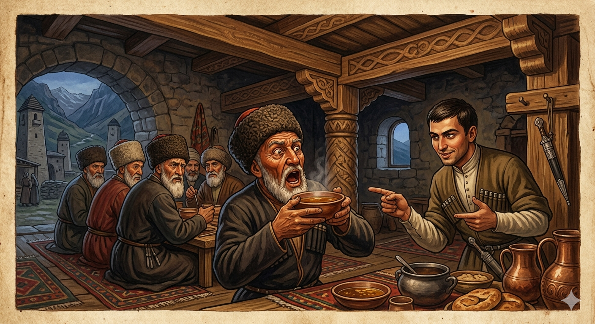

И.А. Дахкильгов. Хьехаме дувцарш - поучительные рассказы-притчи.
И.А. Дахкильгов. Хьехаме дувцарш - поучительные рассказы-притчи. Из ингушского фольклора.

Во де венначоа фу хул
Мурдашта шун тӀа гӀулакх деш лаьттав цхьа зӀамига саг. Цхьан мурдо дилла яь шийна, аьннад. Хьаеча, къург а баь, шийла я ер, аьннад. ДӀавахача зӀамига саго, йӀайхагӀаяр яь, аьнна, Ӏи етташ боа дилла кад бенаб. Бага маькх а елла, къург а баь, аьннад мурдо, ер а шийла я, аьнна. Хайнад зӀамигача сага ше харцахьа кхеставелга. Юха йӀайха дилла йоттийта, тӀагӀолла даьтта деттад. Хьабенаб кад. Ӏи етташ хиннаяц цох. Шийла я-кха ер, аьнна хийтта, мурдо боккхо къург баьб. Тов бага еллача санна баге йоагаяьй. Из гӀортаяьча бӀаргаш тховнагахьа дерзадаь., бӀаргех хиш доладенна, йист ца хулалуш вагӀаш хиннав мурд. - Оарцашка хьежаш вагӀий хьо? – Ӏотташ хаьттад зӀамигача саго, - вай даде соахка диллад уж. Дика дий? Йист ца хулалуш баге гӀортаяьча, урагӀа бӀаргаш а къоарзадаь вагӀаш хиннав тийшар бе венна мурд.
РУССКИЙ
Не делай другому плохого
На каком-то пиршестве мюридам прислуживал молодой человек. Один мюрид попросил его принести чашку бульона. Когда юноша принес, он его отпил и сказал, что бульон остыл. Юноша принес вторую чашку бульона, налив его прямо из кипящего котла. От чашки валил пар. Мюрид взял в рот кусок хлеба, отхлебнул бульон и сказал, что и на этот раз он остывший. В третий раз взял юноша кипящий бульон, но добавил в него немного жира. Мюрид, видя, что от чашки не валит пар, посчитал его холодным и сделал большой глоток. Его обожгло так, словно в рот напихали горящих углей. С открытым ртом и выпученными глазами мюрид уставился в потолок. “Ты смотришь на балки, - подкольнул юноша, - их в прошлом году отец уложил. Правда, хорошие?”. Мюрид и слова не мог молвить. Так он поплатился за свои придирки.
ENGLISH
НОХЧИЙН
ПОГОВОРКИ